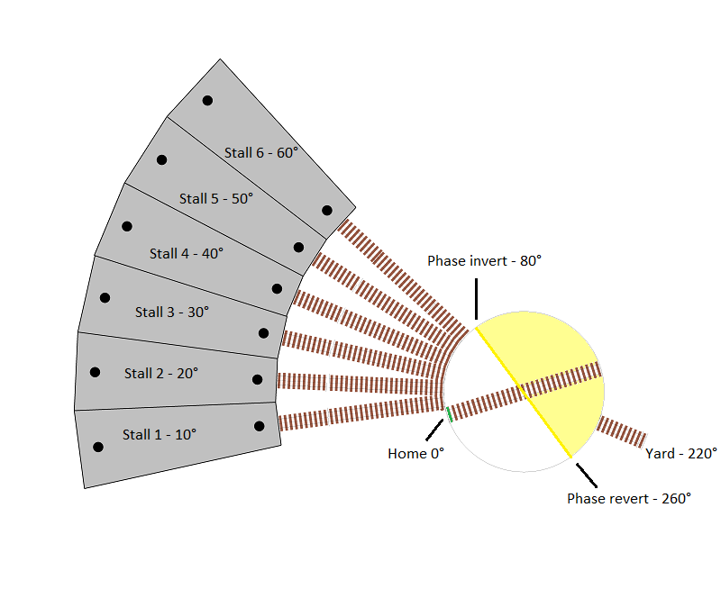
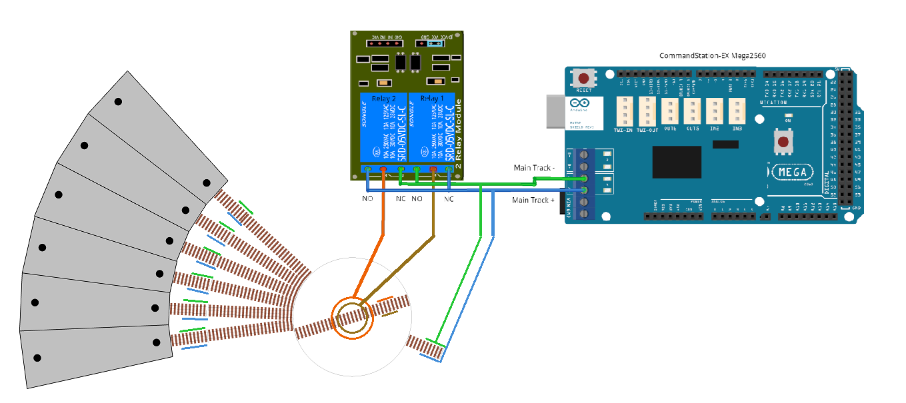
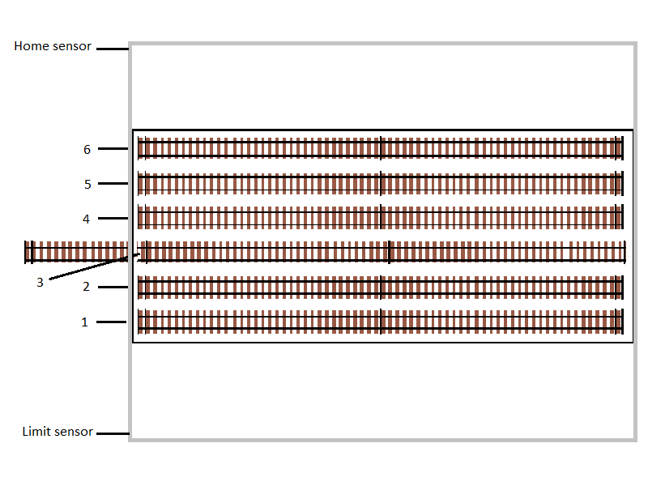

Stage 5 - Turntables & Traversers


A turntable can add significant interest to a layout, especially when involved in operations sessions, and when depicting realistic engine yards.
In addition, turntables can be a real space saver compared to reversing loops, and traversers can also be significant space savers for staging tracks, allowing multiple trains to be staged ready for action without taking up spurs or sidings on the main layout when not in use.
When it comes to RMFT, we are adding a turntable that has seven defined positions, six of which are for entering roundhouse stalls, and the seventh is the track connecting to the rest of the layout via the switching/shunting yard.
In addition, we are also adding a horizontal staging traverser that will allow for six complete trains to be staged off the layout ready for action.
Tip
In preparation for adding an EX‑Turntable to your layout, you’ll need to understand the concepts outlined on the Overview page, paying particular attention to the section on polarity or phase switching (Important! Phase (or polarity) switching), as we will be using automatic phase switching for the turntable.
Further to this, you’ll also need to understand the differences required for traverser mode as outlined on the Traversers and Limited Rotation Turntables page. We will not require phase switching for the traverser, as any locos on the traverser will not be rotating 180 degrees.
If you won’t be using a traverser on your layout or want to tackle this separately, you can skip the traverser info on this page as it is essentially an extension of the turntable info.
Having both a turntable and traverser will require two separate instances of EX‑Turntable, meaning two Arduinos, two stepper drivers/motors, and so forth.
What to expect to learn from stage 5
At the end of this stage, we expect you will have learnt the following:
How to add an EX‑Turntable to your EX‑CommandStation in both turntable and traverser modes
How to calculate and tune your EX‑Turntable positions, including DCC phase/polarity switching
How to control and automate your EX‑Turntable
Add an EX-Turntable to your EX-CommandStation
Note
All configuration items have been updated in line with EX‑Turntable release 0.5.0-Beta and the associated updates to the “add-turntable-controller” branch of EX‑CommandStation which has the device driver and all entities renamed from “Turntable-EX” to the newly branded “EX-Turntable”. If you have an earlier version of either EX‑CommandStation or EX‑Turntable, these examples will differ in this regard.
To add our turntable and traverser to the EX‑CommandStation, we need to ensure EX‑Turntable is configured correctly for both items, and then add the device drivers with the correct configuration to our EX‑CommandStation.
Adding the turntable
For the purposes of this exercise, we will assume:
Everything needed from the Purchasing page is available
All steps up to and including 7. Load the EX-Turntable software on the Assembly & Setup page have been completed
At this point, based on the assumptions above, our EX‑Turntable should be configured ready to add to our EX‑CommandStation.
Expand “config.h” to see the EX‑Turntable configuration file for the turntable, noting we have removed all comments for brevity.
"config.h" for the turntable
#define I2C_ADDRESS 0x60
#define TURNTABLE_EX_MODE TURNTABLE
#define HOME_SENSOR_ACTIVE_STATE LOW
#define LIMIT_SENSOR_ACTIVE_STATE LOW
#define RELAY_ACTIVE_STATE HIGH
#define PHASE_SWITCHING AUTO
#define PHASE_SWITCH_ANGLE 45
#define STEPPER_DRIVER ULN2003_HALF_CW
#define DISABLE_OUTPUTS_IDLE
#define STEPPER_MAX_SPEED 200 // Maximum possible speed the stepper will reach
#define STEPPER_ACCELERATION 25 // Acceleration and deceleration rate
#define LED_FAST 100
#define LED_SLOW 500
Now that the basics of EX‑Turntable have been completed and it is ready to be added to our EX‑CommandStation, we need to get it connected ready for action.
Firstly, our EX‑CommandStation needs to be prepared by ensuring the EX‑Turntable device driver is loaded. This is covered in 8. Add the EX-Turntable device driver to EX-CommandStation.
Next, we need to connect EX‑Turntable to our EX‑CommandStation which requires a connection to the I2C interface, and it’s a good idea to make sure EX‑Turntable is turned on before EX‑CommandStation to ensure it’s detected successfully at startup. This is covered in 9. Connect EX-Turntable to your EX-CommandStation.
Expand “myHal.cpp” to see the EX‑CommandStation HAL configuration file required to add the turntable.
"myHal.cpp" for the turntable
#if !defined(IO_NO_HAL)
// Include devices you need.
#include "IODevice.h"
#include "IO_EXTurntable.h"
//==========================================================================
// The function halSetup() is invoked from CS if it exists within the build.
// The setup calls are included between the open and close braces "{ ... }".
// Comments (lines preceded by "//") are optional.
//==========================================================================
void halSetup() {
EXTurntable::create(600, 1, 0x60);
}
#endif
Once we have prepared our EX‑CommandStation and connected EX‑Turntable, they then need to be turned on with the connection validated as per Testing EX-Turntable.
Now, we are ready to move on to adding the traverser, then tuning the positions for both.
Adding the traverser
For the purposes of this exercise, we will assume:
Everything needed from the Purchasing page including the considerations as outlined in What you need for traverser mode is available
All steps up to and including 6. Connect power and test on the Assembly & Setup page have been completed
All changes required as outlined on the Traversers and Limited Rotation Turntables page have been taken into account
Tip
It is highly recommended to make use of the Sensor testing mode to validate both the home and limit sensors are working correctly when in traverser mode.
Firstly, you will note in the list of assumptions above that we stopped one step earlier in the EX‑Turntable assembly process at step 6, and that’s because we need to ensure our traverser is available at a different I2C address and on a different Vpin to our turntable to ensure they are controlled independently of each other.
To achieve this, we will be using the I2C address 0x61 and will be assigning the Vpin 601.
So, in order to complete 7. Load the EX-Turntable software, the value for I2C_ADDRESS in the “config.h” file needs to be changed to 0x61, and of course the TURNTABLE_EX_MODE needs to be set to TRAVERSER.
As we are continuing to use the default ULN2003/28BYJ-48 stepper driver and motor combo for our traverser, nothing else needs to change.
Once we have noted these changes, we can proceed with 7. Load the EX-Turntable software, using the updated values in the “config.h” file.
Expand “config.h” to see the EX‑Turntable configuration file for the traverser, noting we have removed all comments for brevity.
"config.h" for the traverser
#define I2C_ADDRESS 0x61
#define TURNTABLE_EX_MODE TRAVERSER
#define HOME_SENSOR_ACTIVE_STATE LOW
#define LIMIT_SENSOR_ACTIVE_STATE LOW
#define RELAY_ACTIVE_STATE HIGH
#define PHASE_SWITCHING MANUAL
#define STEPPER_DRIVER ULN2003_HALF_CW
#define DISABLE_OUTPUTS_IDLE
#define STEPPER_MAX_SPEED 200 // Maximum possible speed the stepper will reach
#define STEPPER_ACCELERATION 25 // Acceleration and deceleration rate
#define LED_FAST 100
#define LED_SLOW 500
Once again, as we did with the turntable, we need to add the traverser device to our EX‑CommandStation, and this is where we need to specify both the updated I2C address of 0x61 and the updated Vpin of 601 to ensure we are adding this as a second device that does not conflict with the turntable.
As per the turntable section, these changes need to be incorporated into the process outlined in 8. Add the EX-Turntable device driver to EX-CommandStation in order to add the traverser device driver to our EX‑CommandStation.
Expand “myHal.cpp” to see the EX‑CommandStation HAL configuration file required to add both the turntable and traverser.
"myHal.cpp" for the turntable and traverser
#if !defined(IO_NO_HAL)
// Include devices you need.
#include "IODevice.h"
#include "IO_EXTurntable.h"
//==========================================================================
// The function halSetup() is invoked from CS if it exists within the build.
// The setup calls are included between the open and close braces "{ ... }".
// Comments (lines preceded by "//") are optional.
//==========================================================================
void halSetup() {
EXTurntable::create(600, 1, 0x60); // This is our turntable device
EXTurntable::create(601, 1, 0x61); // This is our traverser device
}
#endif
Once we have prepared our EX‑CommandStation and connected EX‑Turntable, they then need to be turned on with the connection validated as per Testing EX-Turntable.
Now, we are ready to move on to tuning the positions.
Tune your turntable and traverser positions
We’ll use some basic mathematics to tune our turntable and traverser positions, however in a real layout, some experimentation will be required for fine tuning to ensure proper track alignment.
Note
When tuning positions, you can use the <D TT vpin steps activity> diagnostic command as outlined in Tuning your turntable positions to test and refine these for perfect track alignment between the turntable bridge track and the surrounding tracks. You can also use the direct EX-Turntable serial testing command <steps activity>/<M steps activity> as covered in Interactive Serial console commands.
We will be using the same steps per revolution number throughout this page (4097) for both the turntable and traverser, and are keeping this consistent with the examples in the EX‑Turntable documentation for simplicity.
If the calculations below seem too complicated, then you are free to figure the step positions out however suits you, and you can always just use experimentation with the diagnostic command to determine the correct positions.
However, when it comes to DCC phase/polarity switching, it’s important to get this right in order to prevent short circuits when locos enter and exit the turntable bridge track.
Obtain the steps per revolution
Before attempting any tuning, the first thing we need to obtain is the steps per revolution for both our turntable and traverser.
Ideally these should have been noted in 7. Load the EX-Turntable software, however this value can also be obtained by monitoring the EX‑Turntable serial console on startup where the steps per revolution are reported along with the other configuration details.
Once we have our steps per revolution, we can use that number with our formulas to calculate the steps required to move to each desired position.
Calculating EX-Turntable positions and DCC phase/polarity switching
Tip
It’s a great idea at this point to understand the importance of DCC phase/polarity and how switching/reversing it works with EX‑Turntable. Refer to Important! Phase (or polarity) switching and How does this work with EX-Turntable? for details.
Note
When outlining turntable positions and angles at which DCC phase switching occurs, these are all relative to the home sensor from the perspective of the turntable bridge end that has the magnet attached.
There are two aspects to tuning our turntable positions; one being the step counts of each track position around the turntable to ensure correct track alignment, and the other being when to swap our DCC phase/polarity to ensure locos can enter and exit the turntable without causing short circuits.
We will refer to our turntable positions from number 1 through to 7 moving in a clockwise direction from our home position, with 1 through 6 being roundhouse stalls 1 through 6, and 7 being our track connecting to the switching/shunting yard. The roundhouse stall tracks are separated by 10 degrees, and our switching/shunting yard connection track is 180 degrees from stall number 4.
The home position has been set 10 degrees before position 1/roundhouse stall 1.
As you can see by the diagram, we have identified the positions (in degrees) from the home position. The DCC phase inversion/reversal is also highlighted for reference when this is discussed a little further down the page.
{kind=link}
Track wiring
In this layout, positions 1 through 6 are all somewhat opposite our connecting track at position 7, and therefore the simplest option for track wiring is to ensure they are all wired with the same polarity.
This means when the home sensor end of our turntable bridge is aligned with any of the roundhouse stall positions, we don’t need to reverse the DCC phase/polarity.
However, when the bridge is rotated 180 degrees, the DCC phase/polarity must be reversed.
We will assume we are using a slip ring for this turntable’s physical connection to the bridge track, and therefore we need to ensure that EX-Turntable’s dual relay board is switched via the automatic phase switching capability.
You will note in the diagram that the motor shield’s positive (+) output is connected to the bottom rail of the yard track and each stall’s track, along with the normally closed (NC) terminal of relay 1, and the normally open (NC) of relay 2.
The motor shield’s negative (-) output is connected to the top rail of each track, and the normally open (NO) terminal of relay 1, and normally closed (NC) of relay 2.
{kind=link}
In the scenario that the DCC phase is to be maintained (both relays turned off), this means the bridge track is kept aligned with the surrounding tracks, as relay 1 connects the brown wire to the positive (+) blue wire, and orange wire to the negative (-) green wire, so the bottom bridge rail is connected to the surrounding track’s bottom rails, and likewise the top bridge rail to the surrounding track’s top rails.
When the relays turn on, these are reversed, resulting in the brown wire connecting to the negative (-) green wire, and orange wire connecting to the positive (+) blue wire.
DCC phase/polarity switching angle calculation
Given our track wiring in combination with the home and roundhouse stall positions, we now know that between 0 (home) and 60 degrees (roundhouse stall 6), we need the DCC phase to be maintained in line with our track wiring, with phase switching occurring at some point after this, before reaching our connection track at position 7.
Therefore, we will set our phase switching angle to 80 degrees, resulting in the phase automatically reverting at 260 degrees.
This is highlighted in the diagram above, with the yellow line indicating when the phase will switch and revert, and the yellow shaded area representing the 180 degrees in which the phase will be inverted.
This means, for our turntable EX‑Turntable, we will need to update “config.h” and repeat 7. Load the EX-Turntable software.
Expand “config.h” to see the updated EX‑Turntable configuration file for the turntable, noting we have removed all comments for brevity.
Updated "config.h" for the turntable
#define I2C_ADDRESS 0x60
#define TURNTABLE_EX_MODE TURNTABLE
#define HOME_SENSOR_ACTIVE_STATE LOW
#define LIMIT_SENSOR_ACTIVE_STATE LOW
#define RELAY_ACTIVE_STATE HIGH
#define PHASE_SWITCHING AUTO
#define PHASE_SWITCH_ANGLE 80
#define STEPPER_DRIVER ULN2003_HALF_CW
#define DISABLE_OUTPUTS_IDLE
#define STEPPER_MAX_SPEED 200 // Maximum possible speed the stepper will reach
#define STEPPER_ACCELERATION 25 // Acceleration and deceleration rate
#define LED_FAST 100
#define LED_SLOW 500
Turntable position calculation
Since we know the angles of our positions as outlined when considering our DCC phase switching, we can now calculate the step counts required for the turntable bridge to align with these positions. We will use the formula outlined in Determine the positions to calculate these step counts (full rotation step count / 360 degrees * position in degrees).
Using this formula results in these step counts (noting we round up or down to the nearest full number):
Position |
Description |
Degrees from home |
Calculation |
Step count |
|---|---|---|---|---|
1 |
Roundhouse stall 1 |
10 |
4097 / 360 * 10 |
114 |
2 |
Roundhouse stall 2 |
20 |
4097 / 360 * 20 |
228 |
3 |
Roundhouse stall 3 |
30 |
4097 / 360 * 30 |
344 |
4 |
Roundhouse stall 4 |
40 |
4097 / 360 * 40 |
459 |
5 |
Roundhouse stall 5 |
50 |
4097 / 360 * 50 |
573 |
6 |
Roundhouse stall 6 |
60 |
4097 / 360 * 60 |
688 |
7 |
Yard connection |
220 |
4097 / 360 * 220 |
2523 |
Tuning the traverser
Tip
Now is a great time to revisit the Traversers and Limited Rotation Turntables page, and in particular the section on Considerations - turntable vs. traverser.
One key item to note with a traverser vs. a turntable is that we don’t have a single track that moves and aligns with multiple layout tracks, but rather the whole traverser bed moves, aligning with a single track that connects to the rest of the layout.
In our diagram, the grey outer rectangle represents the limit of movement for the traverser table, with the home sensor located at the top, and limit sensor at the bottom. This way, when the traverser moves beyond position 1, it will trigger the home sensor. Likewise, when moving beyond position 6, it will trigger the limit sensor.
It is currently aligned with position 3.
{kind=link}
For our traverser positions, we have six evenly spaced tracks on the traverser. In addition, we need to ensure we leave a buffer between our home and limit sensors as they should provide some indication of when the traverser is reaching the physical limits of movement. We will use an arbitrary value of 100 steps for this buffer.
This will mean our first position will be at step 100 (0 + buffer), our last position will be at step 3097 (4097 - buffer), and we will need an additional four positions divided equally between these two positions. Our effective step count between positions 1 and 6 becomes 2997 (3097 - 100) which needs to be divided by 5 to give us 4 evenly distributed positions, which is a gap of 599 steps between each.
This results in these positions (noting we round up or down to the nearest full number):
Position |
Description |
Calculation |
Step count |
|---|---|---|---|
1 |
Staging 1 |
0 + 100 (home + buffer) |
100 |
2 |
Staging 2 |
100 + 599.4 (position 1 + gap) |
699 |
3 |
Staging 3 |
100 + 1198.8 (position 1 + 2 * gap) |
1299 |
4 |
Staging 4 |
100 + 1798.2 (position 1 + 3 * gap) |
1898 |
5 |
Staging 5 |
100 + 2397.6 (position 1 + 4 * gap) |
2498 |
6 |
Staging 6 |
4097 - 100 (limit - buffer) |
3097 |
Traverser track wiring
As there is no rotation with the traverser, there is no need for any DCC phase switching, and therefore you simply need to ensure the traverser is wired with the same polarity as the layout connection track.
Control and automate your EX-Turntable
Now we have determined our various turntable and traverser positions and have calculated the correct angle at which to switch our DCC phase/polarity, it’s time to put this all into place so we can control and automate our EX‑Turntable.
Control via diagnostic commands
For basic control and validation of the turntable and traverser positions, this can be accomplished using the diagnostic command <D TT vpin steps activity> via the serial console of you EX‑CommandStation.
Control and automation with EX-RAIL
While controlling EX‑Turntable via the diagnostic command is great for testing and tuning our various EX‑Turntable positions, it’s not exactly the friendliest way to control the turntable during normal use of our layout.
There is a much better way to do this by using the MOVETT(vpin, steps, activity) command available in EX‑RAIL as part of a route definition that is advertised to wiThrottle apps and Engine Driver. This allows you to simply select the appropriate route from the route list, and EX‑RAIL and EX‑Turntable will do their things, rotating or moving to the provided position. This is also covered in Advertising positions to Engine Driver and WiThrottle applications.
Controlling your EX‑Turntable this way also allows you to incorporate other automated activities associated with turntable or traverser movements, such as using the virtual block commands <RESERVE> and <FREE> to ensure no other automation sequences attempt to drive a loco on to the turntable while it is moving, to control auxiliary warning LEDs to indicate movements are happening, and so forth.
EX-RAIL commands for EX-Turntable
EX-RAIL ROUTEs for EX-Turntable
Here is an example of what you can do to control an EX‑Turntable via a ROUTE using EX‑RAIL (you will note this is based on the example provided in myEX-Turntable.example.h provided with the EX‑CommandStation software):
// Definition of the EX_TURNTABLE macro to correctly create the ROUTEs required for each position.
// This includes RESERVE()/FREE() to protect any automation activities.
//
#define EX_TURNTABLE(route_id, reserve_id, vpin, steps, activity, desc) \
ROUTE(route_id, desc) \
RESERVE(reserve_id) \
MOVETT(vpin, steps, activity) \
WAITFOR(vpin) \
FREE(reserve_id) \
DONE
EX_TURNTABLE(TTRoute1, Turntable, 600, 114, Turn, "Roundhose stall 1")
ALIAS(Turntable, 255)
ALIAS(TTRoute1)
Here’s the explanation:
#define EX_TURNTABLE...
This macro is only defined once, and encapsulates all the activities you wish to configure and perform for each EX‑Turntable position you want to define as a ROUTE.
In this case, this macro will do these things:
#define EX_TURNTABLE(route_id, reserve_id, vpin, steps, activity, desc) \- this line defines how you need to call the macro and provide the parameters for each ROUTE laterROUTE(route_id, desc) \- this line defines the ROUTE ID, and the description, which is what will appear in wiThrottle apps and Engine DriverRESERVE(reserve_id) \- this line attempts to reserve the virtual block; if it is already reserved by another ROUTE, it will pause until it is free, otherwise it will reserve it and continueMOVETT(vpin, steps, activity) \- this line is what actually tells EX‑Turntable what to do, based on the step count and activity providedWAITFOR(vpin) \- this line tells EX‑RAIL not to continue processing further until such time as EX‑Turntable has finished movingFREE(reserve_id) \- this line is what frees our virtual block reservation only when the move is completeDONE- this is our mandatory termination line for a ROUTE as required by EX‑RAILEX_TURNTABLE(TTRoute1, Turntable, 600, 114, Turn, "Roundhose stall 1")- this line calls our macro and provides the required parameters for the lines aboveALIAS(Turntable, 255)- this line defines an alias for the number 255 which is used as a virtual block IDALIAS(TTRoute1)- this line simply ensures we have a unique ID we pass to the EX_TURNTABLE macro, and we don’t particular care what the ID is, just that it’s unique
EX-Turntable is ready to use
That’s really all there is to it!
We’ve successfully added EX‑Turntable to our EX‑CommandStation in both turntable and traverser modes.
We’ve successfully calculated our EX‑Turntable positions and DCC phase/polarity switching angles, and we know how to tune the individual positions as well.
We also know how to control our EX‑Turntable by both the interactive diagnostic commands as well as via EX‑RAIL.
Complete myAutomation.h examples
To finish up, here are two complete myAutomation.h examples to peruse.
The first is EX‑Turntable in turntable mode only, and the second has the traverser mode added as well.
As per our our EX‑RAIL routes explanation, these are based on the “myEX-Turntable.example.h” included with the EX‑CommandStation software.